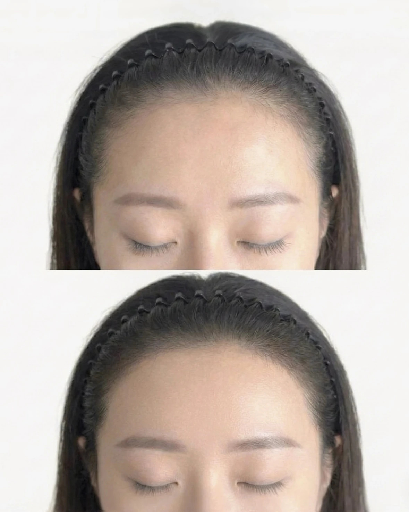
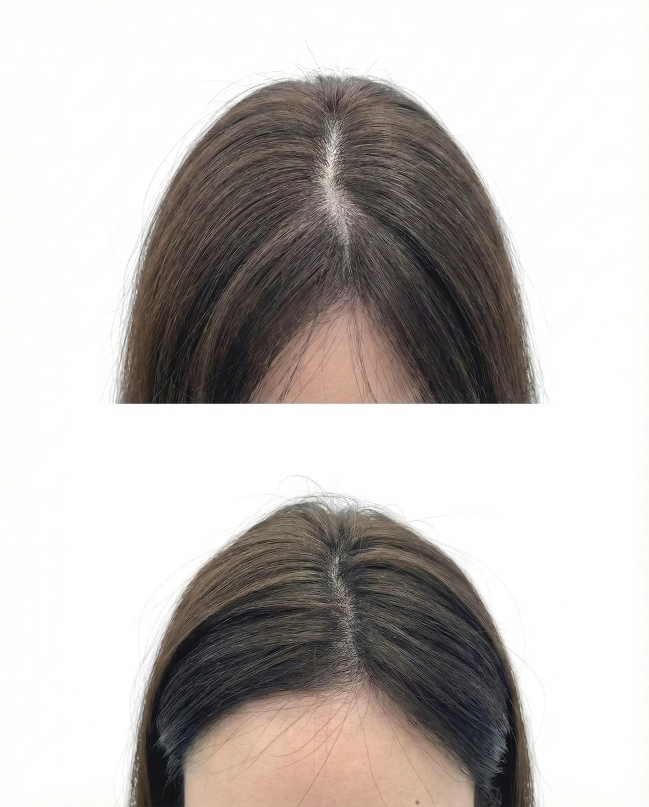
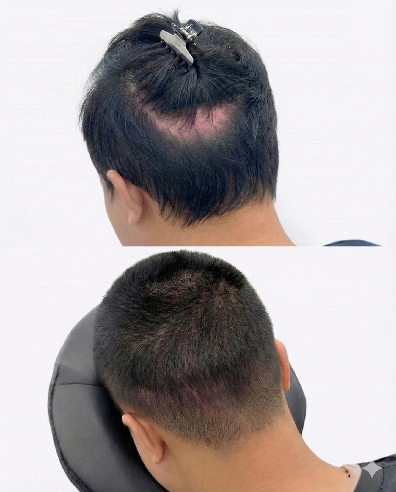
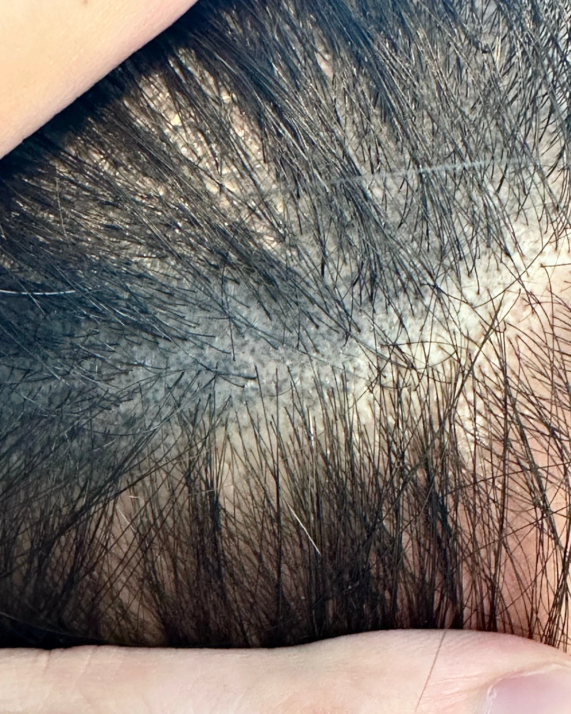
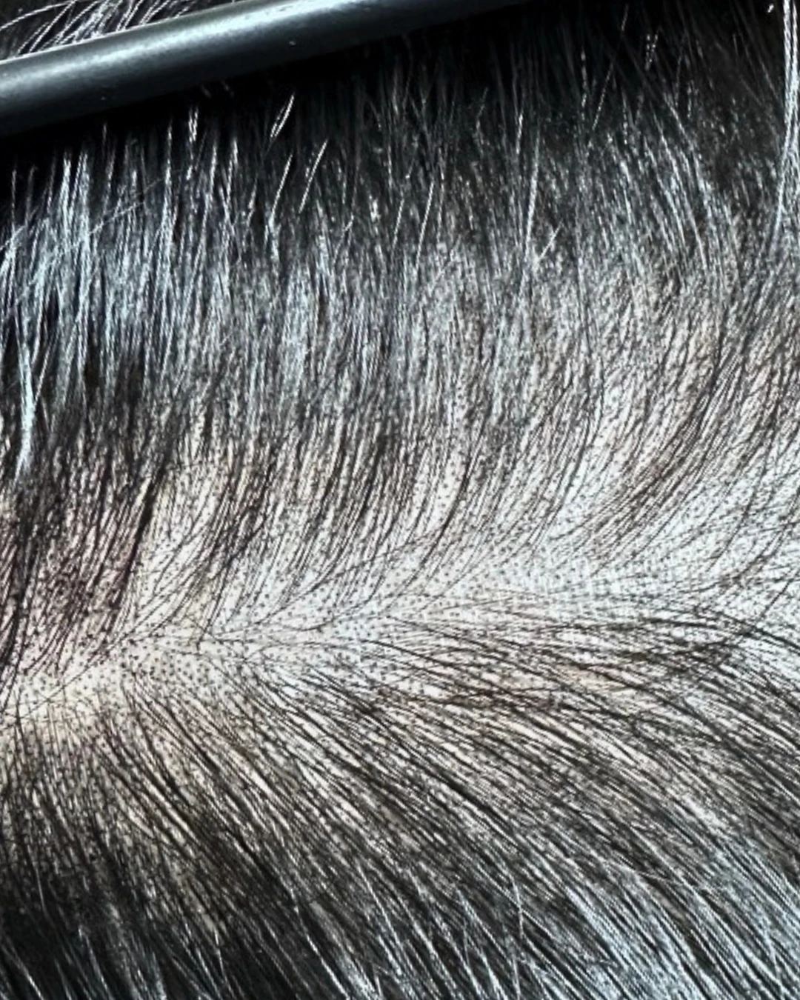

Portfolio Detail
타고난 원모결을 따라 디자인하는 가장 자연스러운 두피문신
맞춤 상담과 독자적인 기법으로 완성해드립니다.
확인하고 싶은 시술 사례를 선택하세요.



푸르게 변색되는 잘못된 두피문신과
변색 없이 유지되는 올바른 두피문신
어떤게 다른 걸까요?


두피 상태를 고려하지 않고 기계적으로 찍어내는 획일적 시술
5년 경력의 노하우로 두피 부위와 컨디션에 맞춰 압(Press) 조절
필요 이상으로 진하고 깊게 주입하여 시간이 지나면 푸르게 변색됨
자체 개발 기법으로 딱 필요한 만큼의 최소한의 색소만 주입 (변색 방지)
깊은 시술 깊이로 인해 마취를 해도 통증이 느껴짐
마취 없이도 편안하게 받을 수 있는 무통증 시술
헤어 라인을 꽉 채우거나 과하게 디자인하여 인위적임
머리털이 나는 범위 내에서 '음영의 역할'을 하는 본질에 집중
밝은 곳에서 보면 점이 퍼져 보이고 문신한 티가 많이 남
태양 볕 아래서도 당당할 수 있는 맑고 선명한 자연스러움 유지
BY SONG SCALP | Copyright 2025. All rights reserved.